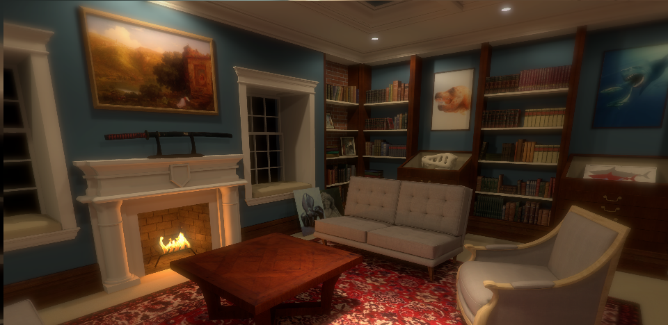

In the Steinhardt School of Culture, Education, and Human Development, New York University's teacher's college, LTL Architects incorporated elements from disparate fields of study, everything from engineering and health care to studio art, into an innovative design that resulted in a LEED Gold designation for the 1930 building.